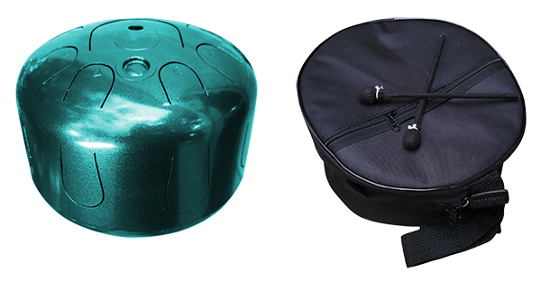
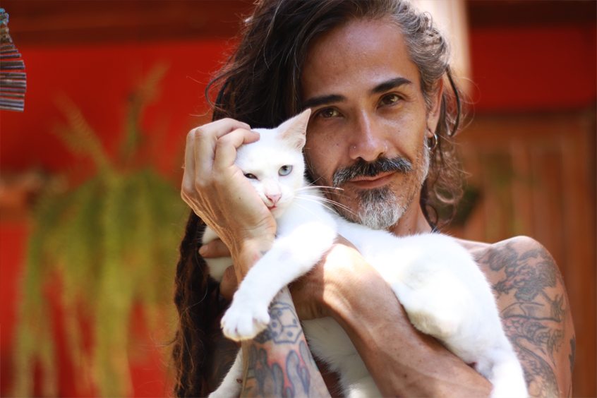
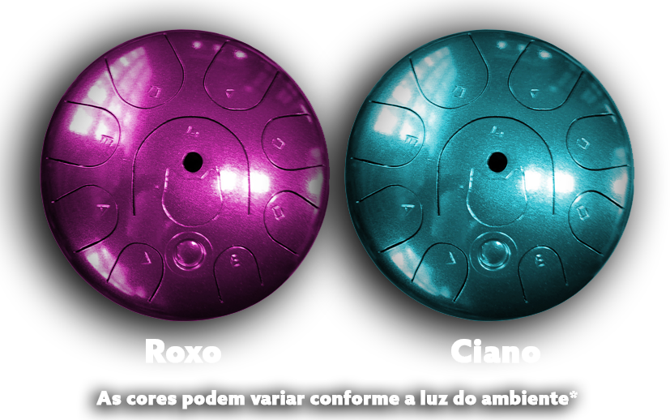

O Zen Tank — Série Pai dos Gatos é um instrumento musical terapêutico, feito à mão, com som suave, profundo e hipnótico. Inspirado no vínculo entre humanos e animais, ele nasceu da prática real de cuidado com gatos resgatados e da busca por uma vibração que acalma, acolhe e reconecta. Cada instrumento é único: produzido artesanalmente, com afinação manual em 432Hz — uma frequência conhecida por suas propriedades relaxantes e harmônicas. O Zen Tank - Série Pai dos Gatos pode ser tocado com os dedos ou com baquetas, e não exige nenhuma formação musical. Ele é intuitivo e sensível ao toque — basta estar presente para deixar o som fluir. Mais do que um instrumento, o Zen Tank - Série Pai dos Gatos é uma ferramenta de presença. Um convite ao silêncio interno. Um canal de conexão entre você, seu animal e o ambiente ao redor. Toque. Respire. Sinta. A vibração certa transforma tudo ao redor.
Valor à vista: R$ 1.350,00
(frete não incluso)
Pagamento via Pix ou cartão. Ou parcele no cartão de crédito (valores com juros, frete não incluso): 3x de R$ 526,00 6x de R$ 270,00 12x de R$ 144,00 Outras opções de parcelamento podem ser combinadas diretamente no atendimento. A compra não é automática. Você será atendido de forma personalizada, diretamente com o Daniël - Pai dos Gatos, para tirar dúvidas, ajustar o envio e finalizar com cuidado. Clique abaixo para iniciar a conversa e garantir o seu Zen Tank.Cada unidade é feita à mão, com acabamento único — nenhum Zen Tank - Série Pai dos Gatos é igual ao outro.
A frequência ideal para relaxamento profundo, equilíbrio energético e bem-estar vibracional.
Cuida de você, do seu animal e do ambiente ao redor. Leve, intuitivo e feito pra transformar.
O Zen Tank Série Pai dos Gatos foi criado para pessoas que buscam mais do que som, buscam presença, cuidado e conexão.É para você que:
Animais são sensíveis. Sentem antes mesmo de entender. Captam nossas emoções, absorvem nossa presença e se conectam à nossa frequência. Por isso, mais do que palavras ou gestos, o que mais os toca é a vibração com que chegamos até eles. O Zen Tank – Pai dos Gatos foi desenvolvido como uma ferramenta de cuidado vibracional. Seus sons suaves e ressonantes ajudam a criar um ambiente de calma, segurança e confiança — tanto para humanos quanto para animais. Ao tocar o instrumento, você muda seu estado interno. E ao mudar sua frequência, você também transforma a forma como seu animal te percebe e responde. A vibração certa é o primeiro passo para um vínculo profundo e saudável.
A afinação em 432Hz é reconhecida por músicos, terapeutas e pesquisadores como uma frequência mais natural, harmônica e equilibrada para o corpo e a mente.
A afinação em 432Hz é reconhecida por músicos, terapeutas e pesquisadores como uma frequência mais natural, harmônica e equilibrada para o corpo e a mente.
Em animais, os efeitos são ainda mais evidentes: sons suaves, com intervalos naturais e frequência estável, não assustam nem incomodam — ao contrário, transmitem segurança, conforto e acolhimento.
Essa frequência está alinhada com padrões da natureza, como:
432Hz não é só um número.
É uma ponte entre som, natureza e bem-estar.

O Zen Tank — Linha Pai dos Gatos é feito a partir do reaproveitamento de botijões utilizados pela indústria de refrigeração (como ar-condicionado, geladeiras e freezers industriais). Após esvaziados, esses cilindros não podem ser recarregados e acabam sendo descartados em grande escala todos os meses. Feitos de aço-carbono de alta qualidade, eles oferecem exatamente o que o Zen Tank — Linha Pai dos Gatos precisa: resistência e uma ressonância sonora profunda. Um material que levaria mais de 100 anos para se decompor na natureza agora ganha um novo propósito — como instrumento de cura, presença e conexão vibracional. Sustentabilidade, resistência e portabilidade: esses são os pilares que sustentam cada Zen Tank — Linha Pai dos Gatos. Mais do que um instrumento, ele representa uma escolha consciente e com os devidos cuidados, pode atravessar décadas — e ser passado adiante como herança vibracional, com história e presença. Ao escolher o Zen Tank — Linha Pai dos Gatos, você investe em algo que faz bem para você, para o seu animal, para o ambiente e para o planeta. É som com propósito. É vibração que transforma.
Material: aço alta qualidade de cilindros R410a para gás de refrigeração (não recarregáveis)
Produção: artesanal, manual
Cada peça é única a(afinação, pintura, desenho)
Afinação: 432Hz
Notas: Escala pentatonica dó maior afinada em 432hz ( G - C - D - E - G - A - C - D - E )
Toque com dedos ou baquetas
Cores: Ciano e Roxo (as cores podem variar de acordo com a luz do ambiente)
Peso e medidas aproximadas: 2KG | Diâmetro: 25cm | Altura: 19cm
Produção: Limitada
Fabricação: feita pela MPS Instrumentos — especialista em instrumentos vibracionais artesanais
Sim. Gatos são extremamente sensíveis ao ambiente sonoro e à vibração ao redor. Sons suaves, com ritmo lento e frequência estável, como os do Zen Tank — Série Pai dos Gatos, não assustam e não sobrecarregam os sentidos felinos — ao contrário, transmitem segurança e bem-estar. No Instituto Gatinho Zen, o instrumento é usado diretamente com gatos resgatados em processo de reabilitação, ajudando a criar um campo vibracional mais calmo e acolhedor. Muitos tutores relatam que seus gatos se aproximam espontaneamente quando o instrumento é tocado — deitam por perto, ronronam ou simplesmente relaxam.
Sim. O Zen Tank — Série Pai dos Gatos pode ser utilizado com cães, coelhos, aves, cavalos e outros animais sensíveis. A vibração suave da afinação em 432Hz atua naturalmente no corpo e no sistema nervoso, favorecendo estados de calma e segurança — independentemente da espécie. No entanto, é importante lembrar que cada animal tem sua própria história, sensibilidade e tempo de adaptação. Por isso, o ideal é: ● primeiro se familiarizar com o instrumento ● preparar um ambiente tranquilo ● começar tocando suavemente, em volume baixo ● permitir que o animal se aproxime no seu próprio tempo Alguns se aproximam logo na primeira vez. Outros observam de longe, e só relaxam depois de várias experiências. O mais importante é respeitar o ritmo de cada um — sem forçar, sem expectativas.
Sim. O Zen Tank — Série Pai dos Gatos é um instrumento intuitivo — você não precisa ter formação musical nem dominar técnicas específicas para começar. As notas são organizadas de forma harmônica, o que significa que qualquer sequência soará agradável. Basta explorar com calma, experimentar e deixar o som acontecer. Pode ser tocado com os dedos ou com as baquetas que acompanham o instrumento. Com o tempo, você desenvolve seu próprio ritmo, criando momentos de presença, relaxamento e conexão — com você mesmo e com seu animal. Não é sobre fazer certo. É sobre sentir e se permitir.
A introdução deve ser feita de forma gradual, respeitosa e atenta à sensibilidade do animal. Mesmo com a vibração suave do Zen Tank — Série Pai dos Gatos, alguns animais podem estranhar no início — seja pelo som, pela presença do objeto ou pelo movimento novo no ambiente. Aqui vão algumas orientações práticas para a primeira experiência: 1. Familiarize-se com o instrumento sozinho antes de apresentar ao animal. Toque em um local silencioso, sem distrações, para sentir a vibração. 2. Deixe o instrumento visível no ambiente por algum tempo — sem tocar — para que o animal o reconheça visualmente e se acostume. 3. No momento de tocar, faça sons suaves e espaçados. 4. Observe a reação do animal. Se ele se aproximar, continue com calma. Se ele se afastar, respeite e tente em outro momento. Cada animal tem seu tempo. O importante é construir uma relação de confiança com o instrumento — e com a vibração que ele gera.
O Zen Tank — Série Pai dos Gatos é afinado manualmente em 432Hz, uma frequência terapêutica escolhida por seu potencial de relaxamento, equilíbrio e harmonia vibracional. Por esse motivo, ele não é indicado para tocar junto com instrumentos afinados em 440Hz, que é o padrão da música ocidental. A diferença de afinação pode gerar desconforto auditivo ou sensação de "descompasso". Este instrumento foi criado para ser tocado de forma solo ou em ambientes onde o foco é a escuta sensível, o relaxamento e a presença. Se quiser combiná-lo com outros sons, o ideal é utilizar: ● instrumentos também afinados em 432Hz ● sons da natureza, mantras, instrumentos intuitivos ou de percussão leve O Zen Tank — Série Pai dos Gatos não é sobre performance. É sobre vibração, cuidado e conexão.
Sim, desde que acompanhado por um adulto. O Zen Tank — Série Pai dos Gatos pode ser uma ferramenta terapêutica valiosa para crianças — especialmente as mais sensíveis, ansiosas ou com demandas emocionais específicas. Seu som suave e repetitivo favorece a concentração, o relaxamento e a expressão criativa. Inclusive, muitos profissionais utilizam instrumentos semelhantes em atendimentos com crianças neurodivergentes (como autistas, TDAH e síndrome de Down), com resultados positivos na regulação sensorial e emocional. Por ser um instrumento delicado e artesanal, não deve ser usado como brinquedo, mas sim apresentado com respeito, cuidado e orientação. Pode ser um momento de conexão entre pais e filhos — um ritual de escuta, toque e presença compartilhada. Mais do que indicado para crianças, o Zen Tank — Série Pai dos Gatos pode ser vivido em família. Cuidando de todos: do tutor, do animal e do ambiente.
Sim Garantia contra defeito de fabricação
Sim

Daniël é terapeuta integrativo, músico e fundador do Instituto Gatinho Zen.
Há quase 35 anos, a música acompanha sua vida.
Hoje, ele une o som e as terapias vibracionais para promover relaxamento, conexão e bem-estar para pessoas e animais.
Foi nesse contexto que o Zen Tank | Série Pai dos Gatos surgiu como parte fundamental de sua prática, um som que acalma ambientes e cuja vibração pode auxiliar na recuperação de traumas em animais e humanos.
O Zen Tank — Série Pai dos Gatos é um instrumento artesanal, afinado em 432Hz, criado com qualidade e propósito.
